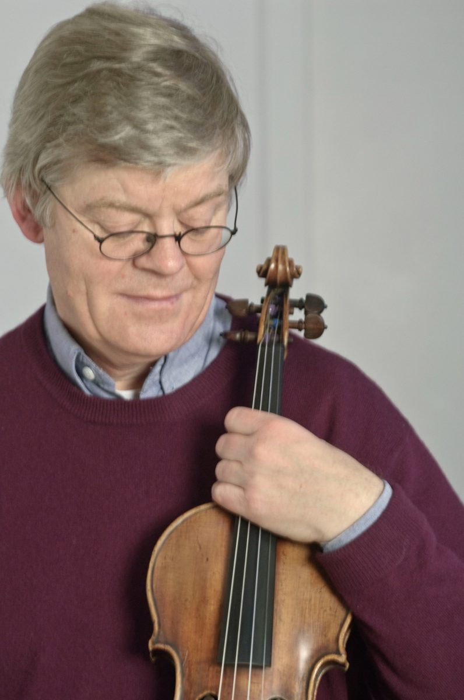

바이올린Violin독일의 바이올리니스트 · 베른하르트 하르톡
The German violinist
Bernhard Hartog
베를린 예술대학교 교수Professor, Berlin University of the Arts (UdK Berlin)
- Deutsches Symphonie-Orchester Berlin, Bayreuth Festival Orchestra 제1악장 역임Former First Concertmaster of the Deutsches Symphonie-Orchester Berlin and the Bayreuth Festival Orchestra
- 독주자로서 알브레히트(Albrecht), 아쉬케나지(Ashkenazy), 샤이(Chailly), 메츠마허(Metzmacher), 나가노(Nagano) 등 저명한 지휘자들과 협연As a soloist, has performed with renowned conductors including Albrecht, Ashkenazy, Chailly, Metzmacher and Nagano
- Hartog Quartet 멤버Member of the Hartog Quartet
- 현 베를린 예술대학교 교수Currently Professor at the Berlin University of the Arts